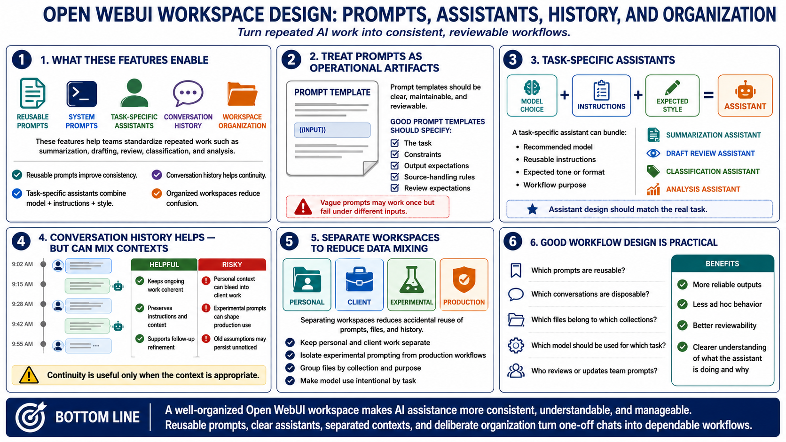

Prompts, Workspaces, and Workflow Design
Connecting to LMS... Progress: in progress

Narration
Open WebUI can support reusable prompts, system prompts, task-specific assistants, conversation history, and workspace organization. These features help teams turn repeated work into more consistent workflows. A reusable prompt can standardize instructions for summarization, drafting, review, classification, or analysis. A task-specific assistant can combine a model choice, instructions, and expected style.
Prompt templates should be clear, maintainable, and reviewable. They should explain the task, constraints, output expectations, and any source-handling rules. Vague prompts may work once but fail under different inputs. Prompts used by a team should be treated as operational artifacts that can be versioned, improved, and reviewed.
Conversation history can improve continuity, but it can also mix contexts in confusing ways. A conversation about personal tasks should not become the basis for client work. Experimental prompts should not silently shape production workflows. Separating personal, client, experimental, and production workspaces reduces accidental data mixing and inappropriate reuse of context.
Good workflow design is practical. Decide which prompts are reusable, which conversations are disposable, which files belong to which collections, and which model should be used for which task. The goal is to make AI assistance more reliable and less ad hoc. A well-organized workspace helps users understand what the assistant is doing and why.